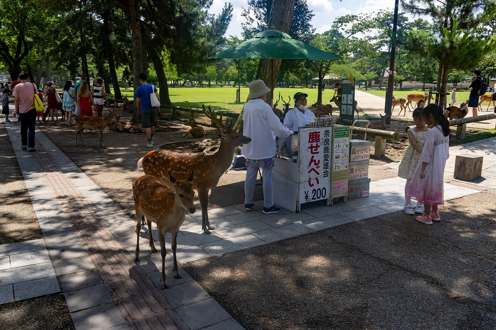
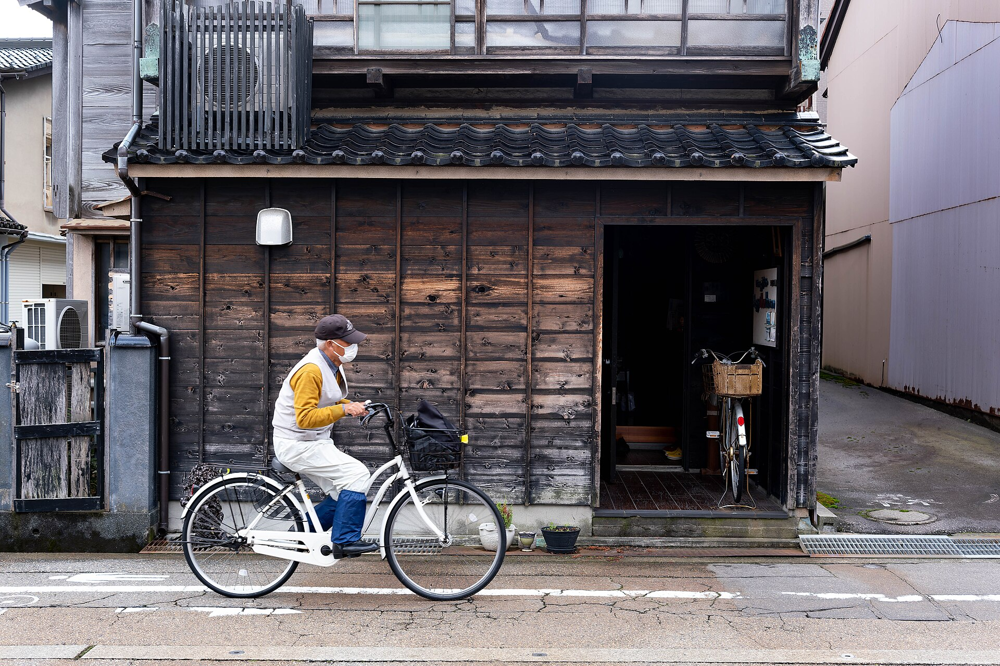
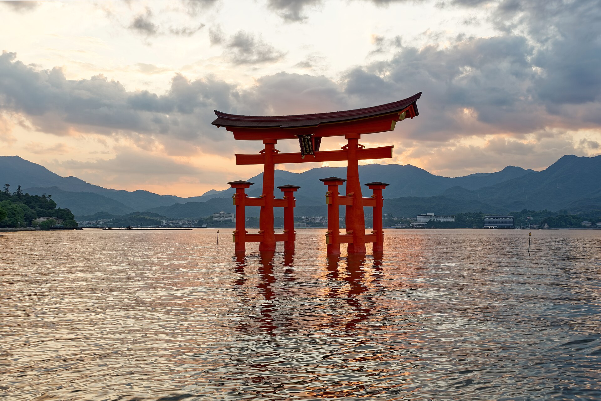
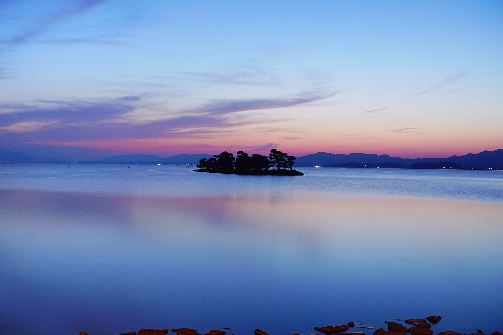
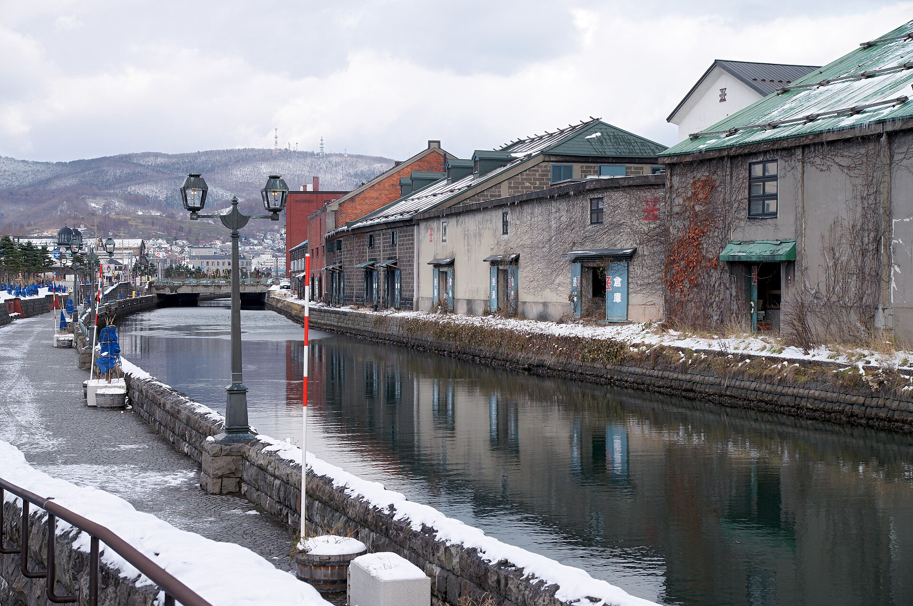
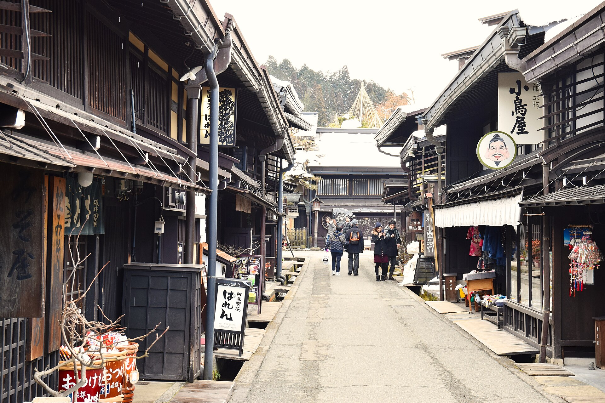
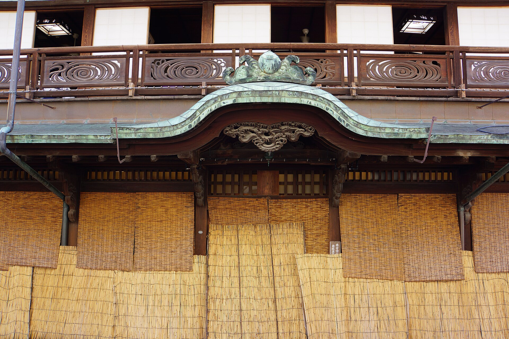
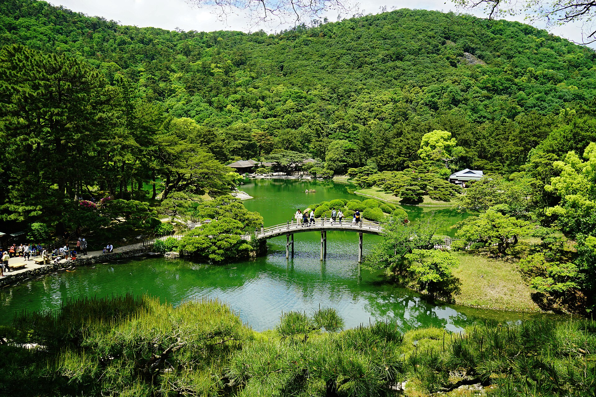
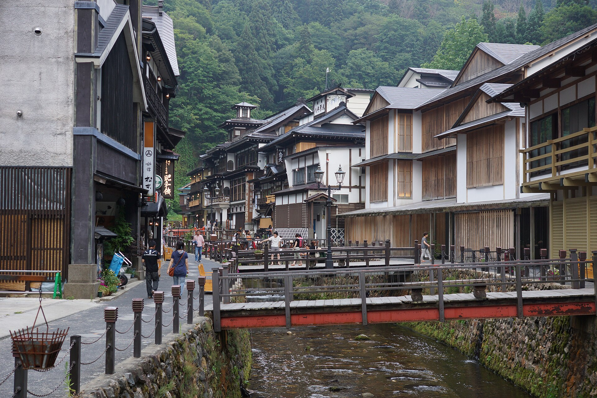
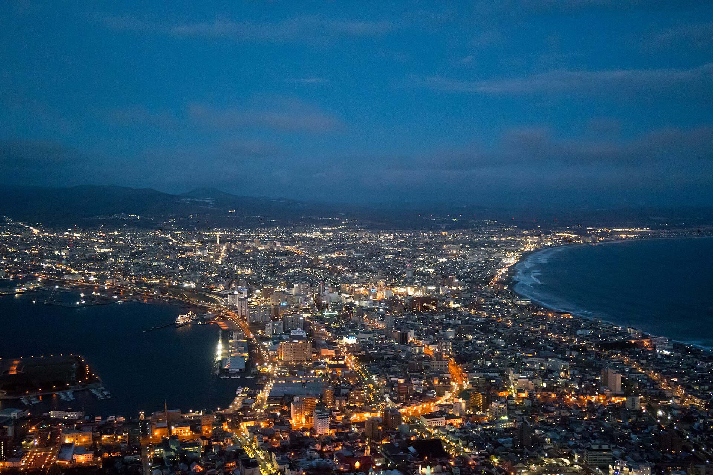

電車とバスで回れる

奈良県
奈良
奈良公園・東大寺・春日大社・若草山
行き方近鉄・JRの駅から歩ける
行った人の声
- 駅から歩ける範囲に興福寺も春日大社も東大寺もあって、鹿にも癒されて。一人旅って楽しいんですね
- 京都ほど混んでいないので、一人で立ち止まっても流されないの。ここが意外と大きいよ
- ディズニーランドは行きにくいけど、奈良公園は行きやすい。この差はほんとにあるよ
旅行・お出かけ / 2026.09.17
YouTubeの動画で出てきた10か所です。景色のすごさではなく、駅から歩けるか、一人で入れるお店があるか、一人旅の人が多いかで選びました。ぜんぶ、実際に一人で行った人が「また行きたい」と言っていた土地です。
10 ITEMS 動画で紹介したもの
並びは動画と同じで、良し悪しの順番ではありません。
行き方は2026年9月時点の一般的な行き方です。ダイヤや運行は変わるので、お出かけの前にお確かめください。
声は公開されている書き込みをもとに書き直した要約で、特定の1人の体験ではありません。
松江と道後は、ふるさと納税の宿泊クーポンがある自治体です。そこだけリンクを付けています。

奈良県
奈良公園・東大寺・春日大社・若草山
行き方近鉄・JRの駅から歩ける
行った人の声

石川県
兼六園・ひがし茶屋街・近江町市場・21世紀美術館
行き方夜行バスでも行ける
行った人の声
気になる声行列のお店に一人で並ぶのだけは、ちょっとだけ寂しかったかな

広島県
厳島神社・大鳥居・焼き牡蠣
行き方JRの宮島口からフェリー
行った人の声

島根県
宍道湖の夕日・出雲大社・松江の城下町
行き方バスと一畑電車
行った人の声
寄付額・内容・受付状況はリンク先でご確認ください

北海道
小樽運河・堺町通り・廻らない寿司
行き方札幌から電車で30分ほど
行った人の声
気になる声運河のライトアップを見るなら泊まり。日帰りだと夜まではいられないかな

岐阜県
古い町並み・宮川朝市・合掌造り
行き方名古屋などからバスツアーも
行った人の声

愛媛県
道後温泉本館・足湯・鯛めし
行き方松山市駅から市電
行った人の声
寄付額・内容・受付状況はリンク先でご確認ください

香川県
金刀比羅宮・栗林公園・讃岐うどん
行き方神戸からフェリーでも
行った人の声
気になる声金刀比羅宮は階段が多いので、体力と相談してね。途中でやめても誰にも言われないよ

山形県
川沿いの木造の宿・ガス灯・山寺
行き方大石田駅からバス
行った人の声
気になる声温泉街に車は入れないので、手前からはバスか歩きになるよ

北海道
函館山の夜景・朝市・元町
行き方新幹線とバス、青森からフェリーも
行った人の声
気になる声夜景は天気次第。曇ると何も見えないので、日程に余裕があると安心かな
SOURCE & NOTES
2026年9月17日に読んだ書き込みをもとに、要約して書き直しました。